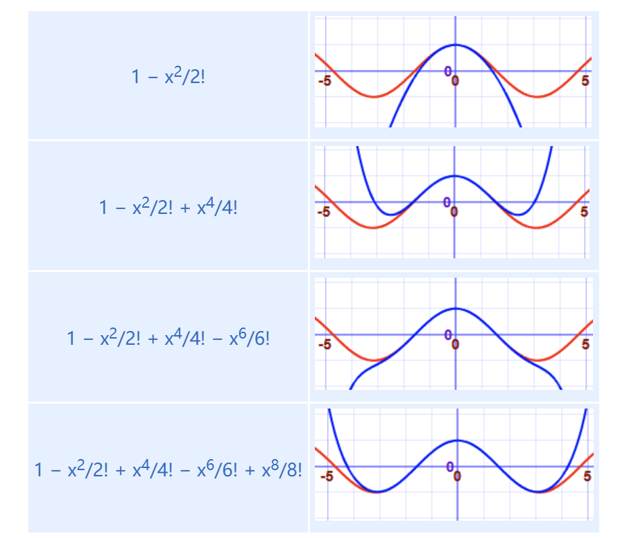

# 导数
导数（Derivative）是微积分中的一个基本概念，用于描述函数的变化率。它反映了函数在某一点处的瞬时变化情况，即函数值随自变量变化的趋势和速度。导数的概念在数学、物理学、工程学、经济学等领域有广泛的应用。
# 导数的基本概念
- 导数的定义：
导数是函数在某一点处的瞬时变化率，可以视为函数曲线在该点的切线斜率。
如果函数 f(x) 在 x=a 处可导，其导数 f'(a) 定义为：
f'(a) = \lim_{h \to 0} \frac{f(a + h) - f(a)}
这个公式中的 h 是一个非常小的增量， f(a+h)−f(a) 是函数值的增量， hf(a+h)−f(a) 是平均变化率，极限 limh→0 表示当 h 趋近于 0 时的平均变化率的极限值。
- 几何意义：
- 导数 f′(x) 表示函数 f(x) 在 x 处的瞬时变化率，即该点的切线斜率。
- 在几何上，这意味着在 x 点附近，函数曲线可以用一条直线近似描述，这条直线的斜率就是导数。
- 物理意义：
- 在物理学中，导数常用来表示速度、加速度等。
- 例如，位移随时间变化的速度就是位移函数关于时间的导数。
# 导数的表示
- 符号表示：
- f'(x) 或者 dxdf(x) ：表示函数 f 在 x 处的导数。
- dxdy ：表示 y 相对于 x 的变化率。
# 导数的计算规则
| 常见函数 | 函数 | 导数 |
|---|
| 常数 | c | 0 |
| 直线 | x | 1 |
| ax | a |
| 平方 | x2 | 2x |
| 平方根 | √x | (½)x-½ |
| 指数 | ex | ex |
| ax | ln(a) ax |
| 对数 | ln(x) | 1/x |
| loga(x) | 1 / (x ln(a)) |
| 三角 （x 的单位是 https://www.shuxuele.com/geometry/radians.html） | sin(x) | cos(x) |
| cos(x) | −sin(x) |
| tan(x) | sec2(x) |
| 反三角 | sin-1(x) | 1/√(1−x2) |
| cos-1(x) | −1/√(1−x2) |
| tan-1(x) | 1/(1+x2) |
| | |
| 法则 | 函数 | 导数 |
| 乘以常数 | cf | cf’ |
| 幂次方法则 | xn | nxn−1 |
| 加法法则 | f + g | f’ + g’ |
| 减法法则 | f - g | f’ − g’ |
| 积法则 | fg | f g’ + f’ g |
| 商法则 | f/g | (f’ g − g’ f )/g2 |
| 倒数法则 | 1/f | −f’/f2 |
| | |
| 链式法则（为 https://www.shuxuele.com/sets/functions-composition.html | f º g | (f’ º g) × g’ |
| 链式法则 （用 ’ ） | f(g(x)) | f’(g(x))g’(x) |
| 链式法则 （用 ddx ） | dydx = dydududx | |
- 常数函数的导数：
- 如果 f(x)=c （其中 c 是常数），则 f′(x)=0 。
- 幂函数的导数：
- 如果 f(x)=xn ，则 f′(x)=nxn−1 。
- 指数函数的导数：
- 如果 f(x)=ex ，则 f′(x)=ex 。
- 对数函数的导数：
- 如果 f(x)=ln(x) ，则 f′(x)=x1 。
- 三角函数的导数：
- 如果 f(x)=sin(x) ，则 f′(x)=cos(x) 。
- 如果 f(x)=cos(x) ，则 f′(x)=−sin(x) 。
- 导数的运算法则：
- 和差法则： (u(x)±v(x))′=u′(x)±v′(x) 。
- 乘积法则： (u(x)⋅v(x))′=u′(x)⋅v(x)+u(x)⋅v′(x) 。
- 商法则： (v(x)u(x))′=v(x)2u′(x)⋅v(x)−u(x)⋅v′(x) 。
- 链式法则： (f(g(x)))′=f′(g(x))⋅g′(x) 。也可以写成dxdy=dudydxdu
# 例子说明
# 例 1: f (x) = x^2
计算函数 f (x) = x^2 在 x 处的导数：
定义导数：
f'(x) = \lim_{h \to 0} \frac{(x + h)^2 - x^2}
展开并化简：
f′(x)=limh→0hx2+2xh+h2−x2=limh→0h2xh+h2=limh→0(2x+h)
取极限：
f′(x)=2x
# 例 2: f(x)=sin(x)
计算函数 f(x)=sin(x) 的导数：
定义导数：
f'(x) = \lim_{h \to 0} \frac{\sin(x + h) - \sin(x)}
利用三角函数的和角公式：
f'(x) = \lim_{h \to 0} \frac{\sin(x) \cos(h) + \cos(x) \sin(h) - \sin(x)}{h} = \lim_{h \to 0} \frac{\sin(x)(\cos(h) - 1) + \cos(x) \sin(h)}
取极限（利用 limh→0hsin(h)=1 和 limh→0cos(h)=1）：
f′(x)=cos(x)
# 导数的应用
- 函数的增长和减小：
- 导数可以用来判断函数在某一区间内是增加还是减少的。
- 极值问题：
- 优化问题：
- 导数在优化问题中用来寻找最优解，例如最大化利润或最小化成本。
- 运动学：
- 在物理中，速度是位移对时间的导数，加速度是速度对时间的导数。
# 总结
- 导数：描述函数的变化率，是函数值随自变量变化的趋势和速度。
- 计算方法：通过定义极限，或者直接应用常用函数的导数规则。
- 应用：广泛用于数学分析、物理、工程、经济等领域，帮助解决极值问题、优化问题等。
掌握导数的概念和计算方法对理解微积分和应用数学有重要的意义。在实际问题中，导数提供了分析和预测变化的重要工具。
# 泰勒级数
用泰勒级数的头几项来估计函数的近似值

泰勒展开的公式是，每一级导数除于级数的乘阶
n=0∑∞n!f(n)(a)(x−a)n=f(a)+1!f′(a)(x−a)+2!f′′(a)(x−a)2+3!f′′′(a)(x−a)3+⋯
其中f(n)(a) 表示f 在点 a 处的n 阶导数，如果a=0，也可以把这个级数称为麦克劳林级数。
f′(a) 要带入到函数中去计算
# 积法则
fg 的导数是 = fg′+f′g
也可以写成
dxdy=udxdv+vdxdu
# 链式法则
可以写成dxdy=dudydxdu，其中的含义是对于 y 函数求 x 的导数，链式法则在中间多个 u，还可以写成
f′(g(x))g′(x)dxdy=dudydxdu
# 例子一：dxdsin(x2) 的导数是什么？
设 u=x2，所以 y = sin (u)：
dxdsin(x2)=dudsin(u)dxdx2dxdsin(x2)=cos(u)(2x)dxdsin(x2)=2xcos(x2)
# 例子二：dxd(5x−2)3 的导数是什么？
f (g (x)) 的导数 = f′(g(x))g′(x)
(5x−2)3 是由 g3 和 5x−2 结合而成
f(g) = g3 g(x) = 5x−2 f′(g)=3g2 g′(x)=5dxd(5x−2)3=3g(x)2×5=15(5x−2)2
# 一阶齐次微分方程
其形式是dxdy=F(xy)，解法：
用 **y=vx 和∗dydx=v+xdvdx∗**，我们便可以解这个微分方程。例子


# 一阶非齐次线性微分方程
既dxdy +P(x)y=Q(x) 这种形式，这里关联着 y 才是非齐次
# 伯努利微分方程
形式：
dxdy +P(x)y=Q(x)yn(n=0,1)
引人变量变换z=y1−n，从而有dxdz = (1−n)y−ndxdy, 代人原方程得
dxdz+(1−n)P(x)z=(1−n)Q(x) 求解该一阶非齐次线性微分方程即可